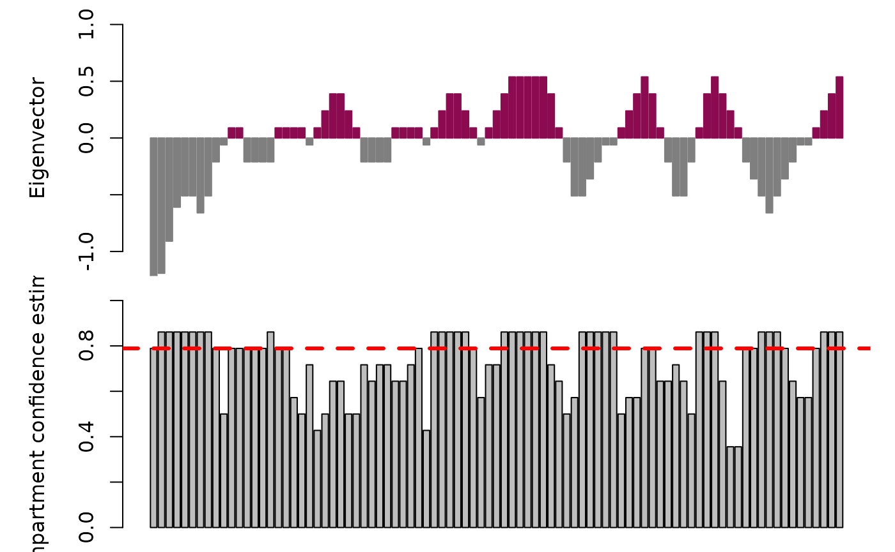
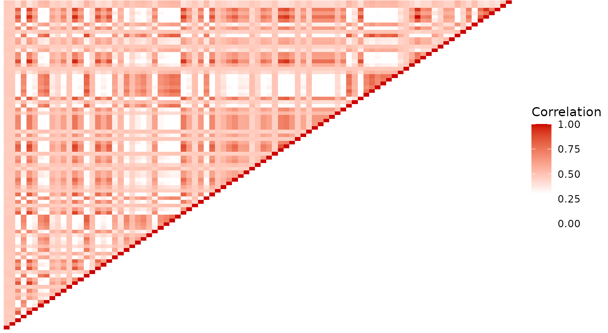

Direct inference of higher-order chromatin structure in individual cells from scRNA-seq and scATAC-seq with compartmap
Ben Johnson
2 June 2025
Source:vignettes/compartmap.Rmd
compartmap.RmdQuick start with example data
Input
The expected input for compartmap is a
RangedSummarizedExperiment object. These can be built using
the built-in function importBigWig() if starting from
BigWigs (recommended for scRNA-seq) or from a feature level object like
a SingleCellExperiment with the rowRanges slot
populated with the GRanges for each feature (see below in the
examples).
As an example for the quick start, we will load an existing example
scRNA-seq data from K562. These data are derived from Johnson and Rhodes
et. al 2021 STORM-seq They have already been TF-IDF transformed with
transformTFIDF(). See further down if starting from bigWigs
or a feature based object. See the full workflow below for more
details.
set.seed(42)
library(compartmap)
data("k562_scrna_chr14", package = "compartmap")Inferring higher-order chromatin domains at the group and single-cell level
Group level inference
Process chr14 of the example K562 scRNA-seq data and infer higher-order chromatin at 1Mb resolution:
k562_compartments <- scCompartments(
k562_scrna_chr14,
chr = "chr14",
res = 1e6,
group = TRUE,
bootstrap = FALSE,
genome = "hg19",
assay = "rna"
)Single-cell level inference
To infer higher-order domains in single cells and quantifying sign coherence with the bootstrapping procedure, you can run:
# Sub-sample to 10 cells as an example
k562_scrna_chr14.sub <- k562_scrna_chr14[,
sample(colnames(k562_scrna_chr14), size = 10, replace = FALSE)
]
k562_compartments.boot <- scCompartments(
k562_scrna_chr14.sub,
chr = "chr14",
res = 1e6,
group = FALSE,
bootstrap = TRUE,
num.bootstraps = 10,
genome = "hg19",
assay = "rna"
)
# Flip the domain sign if the sign coherence is discordant in 80% of the bootstraps
k562_compartments.boot.fix <- fixCompartments(
k562_compartments.boot,
min.conf = 0.8
)
# Look at the first cell in the GRangesList object
k562_compartments.boot.fix[[1]]
## GRanges object with 89 ranges and 13 metadata columns:
## seqnames ranges strand | pc
## <Rle> <IRanges> <Rle> | <numeric>
## chr14:19000000-19999999 chr14 19000000-19999999 * | -1.857418
## chr14:20000000-20999999 chr14 20000000-20999999 * | -1.191918
## chr14:21000000-21999999 chr14 21000000-21999999 * | -0.909080
## chr14:22000000-22999999 chr14 22000000-22999999 * | -0.609605
## chr14:23000000-23999999 chr14 23000000-23999999 * | -0.509780
## ... ... ... ... . ...
## chr14:103000000-103999999 chr14 103000000-103999999 * | -0.0605680
## chr14:104000000-104999999 chr14 104000000-104999999 * | 0.0891695
## chr14:105000000-105999999 chr14 105000000-105999999 * | 0.2389070
## chr14:106000000-106999999 chr14 106000000-106999999 * | 0.3886444
## chr14:107000000-107349539 chr14 107000000-107349539 * | 0.5383819
## compartments score boot.open boot.closed
## <character> <numeric> <numeric> <numeric>
## chr14:19000000-19999999 closed -1.857418 1 9
## chr14:20000000-20999999 closed -1.191918 0 10
## chr14:21000000-21999999 closed -0.909080 0 10
## chr14:22000000-22999999 closed -0.609605 0 10
## chr14:23000000-23999999 closed -0.509780 0 10
## ... ... ... ... ...
## chr14:103000000-103999999 closed -0.0605680 4 6
## chr14:104000000-104999999 open 0.0891695 9 1
## chr14:105000000-105999999 open 0.2389070 10 0
## chr14:106000000-106999999 open 0.3886444 10 0
## chr14:107000000-107349539 open 0.5383819 10 0
## conf.est conf.est.lowerCI conf.est.upperCI
## <numeric> <numeric> <numeric>
## chr14:19000000-19999999 0.788987 0.574032 1
## chr14:20000000-20999999 0.861234 0.679113 1
## chr14:21000000-21999999 0.861234 0.679113 1
## chr14:22000000-22999999 0.861234 0.679113 1
## chr14:23000000-23999999 0.861234 0.679113 1
## ... ... ... ...
## chr14:103000000-103999999 0.572247 0.311604 0.832889
## chr14:104000000-104999999 0.788987 0.574032 1.000000
## chr14:105000000-105999999 0.861234 0.679113 1.000000
## chr14:106000000-106999999 0.861234 0.679113 1.000000
## chr14:107000000-107349539 0.861234 0.679113 1.000000
## flip.compartment flip.score flip.conf.est
## <logical> <numeric> <numeric>
## chr14:19000000-19999999 FALSE -1.857418 0.788987
## chr14:20000000-20999999 FALSE -1.191918 0.861234
## chr14:21000000-21999999 FALSE -0.909080 0.861234
## chr14:22000000-22999999 FALSE -0.609605 0.861234
## chr14:23000000-23999999 FALSE -0.509780 0.861234
## ... ... ... ...
## chr14:103000000-103999999 FALSE -0.0605680 0.572247
## chr14:104000000-104999999 FALSE 0.0891695 0.788987
## chr14:105000000-105999999 FALSE 0.2389070 0.861234
## chr14:106000000-106999999 FALSE 0.3886444 0.861234
## chr14:107000000-107349539 FALSE 0.5383819 0.861234
## flip.conf.est.upperCI flip.conf.est.lowerCI
## <numeric> <numeric>
## chr14:19000000-19999999 1 0.574032
## chr14:20000000-20999999 1 0.679113
## chr14:21000000-21999999 1 0.679113
## chr14:22000000-22999999 1 0.679113
## chr14:23000000-23999999 1 0.679113
## ... ... ...
## chr14:103000000-103999999 0.832889 0.311604
## chr14:104000000-104999999 1.000000 0.574032
## chr14:105000000-105999999 1.000000 0.679113
## chr14:106000000-106999999 1.000000 0.679113
## chr14:107000000-107349539 1.000000 0.679113
## -------
## seqinfo: 1 sequence from an unspecified genome; no seqlengthsVisualization of inferred chromatin domains
Once the data have been processed at either the group or single-cell
level, one can visualize the results using the plotAB
function in compartmap. Notably, we can include the confidence
intervals and median, chromosome-wide confidence estimate derived from
the bootstrap procedure for sign coherence. At 50%, this suggests that
estimates are evenly split between open and closed states. This may be
due to data sparsity or heterogeneity in the data. One possible approach
to resolve this is to increase the number of bootstraps performed if
initially set low (e.g. 10). Alternatively, it may be a region that is
worth investigating for your data set.
Plot the “fixed” results in cell 1 from above with plotAB with the confidence intervals and median confidence estimate:
plotAB(
k562_compartments.boot.fix[[1]],
chr = "chr14",
what = "flip.score",
with.ci = TRUE,
median.conf = TRUE
)
It is known that sometimes, the domains may be inverted relative to
orthogonal data This is also true in Hi-C and scHi-C domain inference
One can invert all domains by setting reverse = TRUE in the
plotAB() call
plotAB(
k562_compartments.boot.fix[[1]],
chr = "chr14",
what = "flip.score",
with.ci = TRUE,
median.conf = TRUE,
reverse = TRUE
)Extraction of domain inflections
It is often of interest to extract the chromatin domain inflection
points as they transition from “open” to “closed” states to look for
nearby CTCF sites, etc. We can accomplish this task using the
getDomainInflections function in compartmap.
Domain inflections can be used to look for nearby CTCF sites, etc. Here we extract single-cell domain inflections:
k562_cell_1_inflections <- getDomainInflections(
k562_compartments.boot.fix[[1]],
what = "flip.score",
res = 1e6,
chrs = "chr14",
genome = "hg19"
)
# Show the inflection points
k562_cell_1_inflections
## GRanges object with 18 ranges and 0 metadata columns:
## seqnames ranges strand
## <Rle> <IRanges> <Rle>
## [1] chr14 29000000 *
## [2] chr14 30999999 *
## [3] chr14 35000000 *
## [4] chr14 38999999 *
## [5] chr14 40000000 *
## ... ... ... ...
## [14] chr14 84999999 *
## [15] chr14 89000000 *
## [16] chr14 94999999 *
## [17] chr14 104000000 *
## [18] chr14 107349539 *
## -------
## seqinfo: 1 sequence from an unspecified genome; no seqlengthsImporting bigWigs as input to compartmap
The currently recommended input files to compartmap for
scRNA-seq are single-cell bigWigs, though does work with a
feature/counts based object as demonstrated in the next section.
Single-cell bigWigs can be generated through several tools, such as deeptools. To
import bigWigs, we can use the importBigWig() function in
compartmap. This will read in a bigWig file and optionally
summarize to an arbitrary bin size. The bin size used in the
compartmap manuscript was 1kb and is what we do here as
well.
We can import a list of bigWig files and merge them into a
RangedSummarizedExperiment object:
# list the example bigWigs
bigwigs <- list.files(
system.file("extdata", package = "compartmap"), full.names = TRUE
)
# generate the 1kb bins
data("hg19.gr", package = "compartmap")
kb_bins <- tileGenome(
seqlengths = seqlengths(hg19.gr)["chr14"],
tilewidth = 1000,
cut.last.tile.in.chrom = TRUE
)
# import
bigwigs_lst <- lapply(bigwigs, function(x) {
importBigWig(x,
bins = kb_bins,
summarize = TRUE, genome = "hg19"
)
})
# combine
bigwig_rse <- do.call(cbind, bigwigs_lst)
colnames(bigwig_rse) <- c("cell_1", "cell_2")Starting with a feature or counts-based object
In the cases where we do not have or can’t start with bigWigs
(e.g. scATAC), we can start with a feature-level or counts object
(e.g. SingleCellExperiment). The two things that must be
there are making sure rowRanges and colnames
are set for each feature and cell/sample. We will use the scATAC-seq
from K562 as an example of how the object should look, but will also
show one way to add rowRanges to a
SingleCellExperiment, which works the same way for a
SummarizedExperiment object.
Loading the scATAC-seq example data pre-processed using the
csaw package:
data("k562_scatac_chr14", package = "compartmap")
# show the overall object structure
# NOTE that the colnames are also there and the assay name is 'counts'
k562_scatac_chr14
## class: RangedSummarizedExperiment
## dim: 11404 279
## metadata(6): spacing width ... param final.ext
## assays(1): counts
## rownames: NULL
## rowData names(0):
## colnames(279): cell_1 cell_2 ... cell_287 cell_288
## colData names(4): bam.files totals ext rlenShowing the rowRanges slot is a GRanges for
each feature
rowRanges(k562_scatac_chr14)
## GRanges object with 11404 ranges and 0 metadata columns:
## seqnames ranges strand
## <Rle> <IRanges> <Rle>
## [1] chr14 19614351-19614500 *
## [2] chr14 19614401-19614550 *
## [3] chr14 19614451-19614600 *
## [4] chr14 19614501-19614650 *
## [5] chr14 19614551-19614700 *
## ... ... ... ...
## [11400] chr14 106938701-106938850 *
## [11401] chr14 106938751-106938900 *
## [11402] chr14 106938801-106938950 *
## [11403] chr14 107280901-107281050 *
## [11404] chr14 107280951-107281100 *
## -------
## seqinfo: 1 sequence from an unspecified genomeBut if we don’t have rowRanges for something like a
SingleCellExperiment we are working with, we need to
generate them. Thus, we will show an example of how to add
rowRanges from a GTF file to a
SingleCellExperiment.
First we define a helper function for adding rowRanges
(modified from https://github.com/trichelab/velocessor/blob/master/R/import_plate_txis.R).
NOTE: you can modify the
rtracklayer::import to not subset to gene level if using
feature level information (e.g. a bed file of fragments for scATAC)
getRowRanges <- function(gtf, asys) {
gxs <- subset(rtracklayer::import(gtf), type == "gene")
names(gxs) <- gxs$gene_id
granges(gxs)[rownames(asys)]
}Import the example HEK293T SingleCellExperiment from the SMART-seq3 paper:
data("ss3_umi_sce", package = "compartmap")
# import the example GTF with the helper function
gtf_rowranges <- getRowRanges(
system.file("extdata/grch38_91_hsapiens.gtf.gz",
package = "compartmap"
),
ss3_umi_sce
)
# add rowRanges to the SingleCellExperiment
rowRanges(ss3_umi_sce) <- gtf_rowrangesWe can now proceed to the next steps and run the compartmap workflow.
Running the compartmap workflow
Once we have data in a RangedSummarizedExperiment or
other type of SummarizedExperiment with the
rowRanges slot filled, we can proceed through the
compartmap workflow. We will use the same K562 scRNA-seq data
shown in the manuscript on chromosome 14 here as the example.
# Load example K562 data imported using importBigWig
data("k562_scrna_raw", package = "compartmap")
# TF-IDF transform the signals
k562_scrna_chr14_tfidf <- transformTFIDF(assay(k562_scrna_se_chr14))
# Add back the TF-IDF counts to the object in the counts slot
assay(k562_scrna_se_chr14, "counts") <- t(k562_scrna_chr14_tfidf)
# Compute chromatin domains at the group level
k562_scrna_chr14_raw_domains <- scCompartments(k562_scrna_se_chr14,
chr = "chr14",
res = 1e6,
group = TRUE,
bootstrap = TRUE,
num.bootstraps = 10,
genome = "hg19",
assay = "rna"
)For single-cells, run:
k562_scrna_chr14_raw_domains <- scCompartments(
k562_scrna_se_chr14,
chr = "chr14",
res = 1e6,
group = FALSE,
bootstrap = TRUE,
num.bootstraps = 10,
genome = "hg19",
assay = "rna"
)‘Fix’ compartments with discordant sign coherence:
k562_scrna_chr14_raw_domains.fix <- fixCompartments(k562_scrna_chr14_raw_domains)
# Plot results
plotAB(k562_scrna_chr14_raw_domains.fix,
chr = "chr14",
what = "flip.score",
with.ci = TRUE,
median.conf = TRUE
)
Higher-order chromatin interaction maps
Another interesting aspect we can derive from scRNA and scATAC is the higher-order interacting domains through denoising of the correlation matrices using a Random Matrix Theory approach. This is often represented with the “plaid-like” patterning shown in Hi-C and scHi-C approaches where stronger correlations (e.g. greater intensity of red) indicates interacting domains relative to lesser correlation. We can do something similar here through iterative denoising using Random Matrix Theory approach:
k562_scrna_chr14_rmt <- getDenoisedCorMatrix(
k562_scrna_chr14,
res = 1e6,
chr = "chr14",
genome = "hg19",
assay = "rna",
iter = 2
)
## Shrinking bins with the JSE.
## Number of means fewer than 4. Using Bayes instead of JSE.
## 108 bins created...
## Calculating correlations...
## Done...
## Denoising the correlation matrix using RMT.
## Iterative denoising. Iteration: 2
# Plot the interaction map
plotCorMatrix(k562_scrna_chr14_rmt, uppertri = TRUE)